Explora las Temporadas
Cada temporada de Bluey está llena de risas, aprendizaje y momentos familiares inolvidables. Descubre algunos de los episodios más trascendentales de cada temporada, que han hecho de esta serie un fenómeno mundial.
Temporada 1
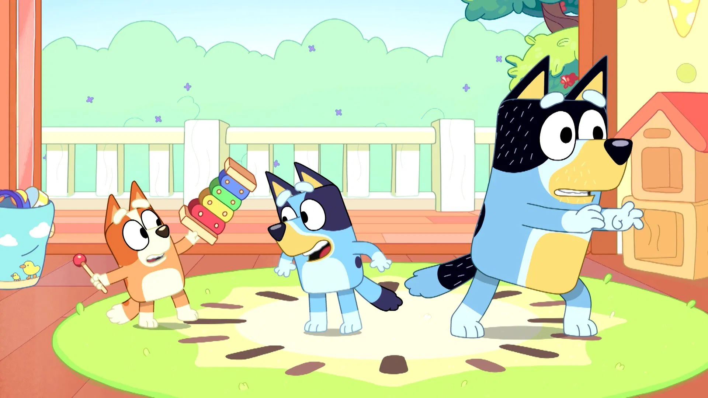
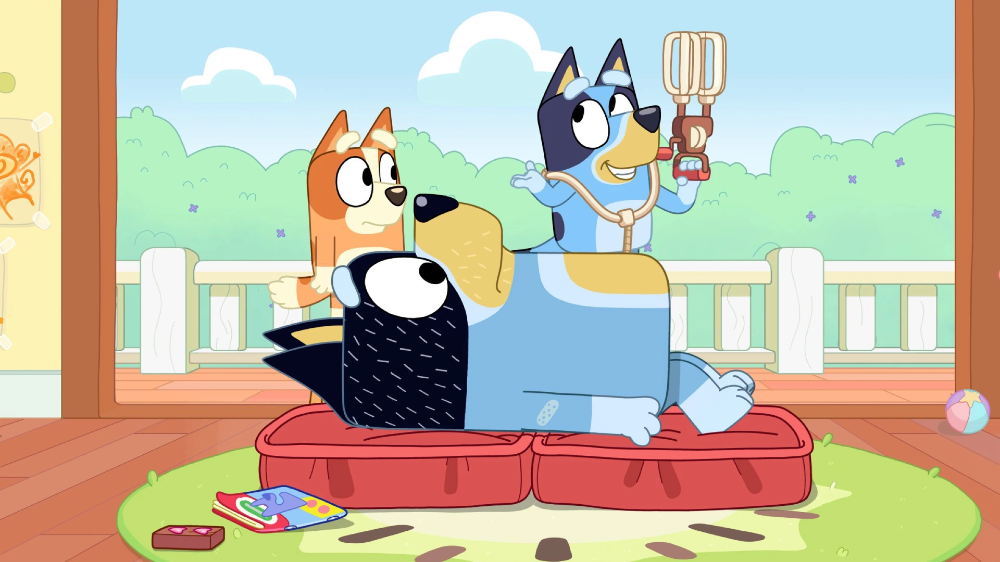
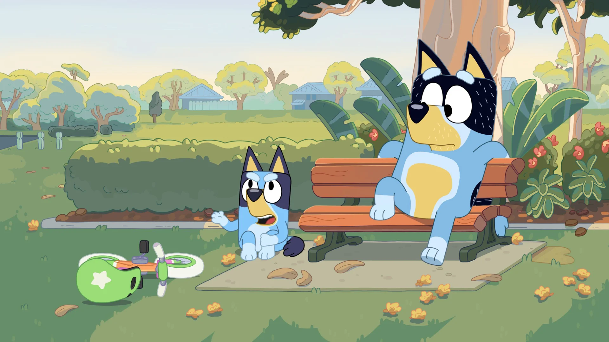
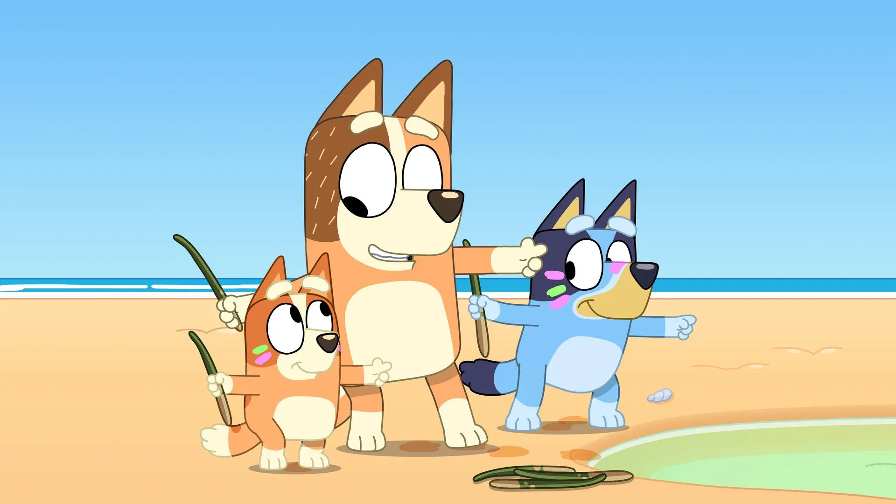
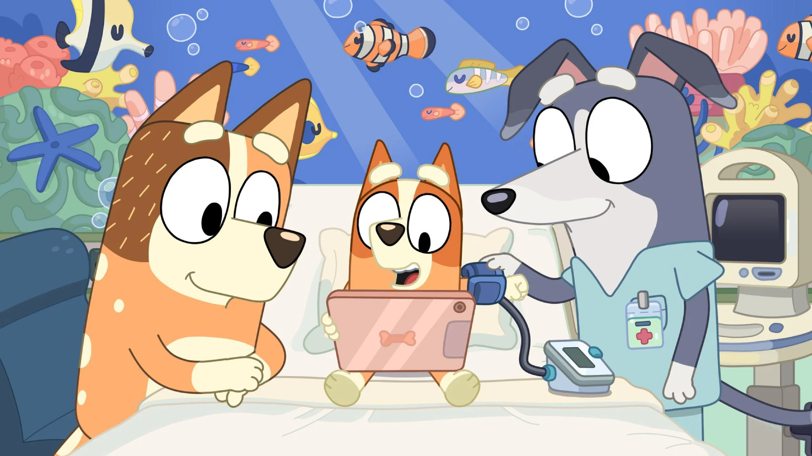
Temporada 2
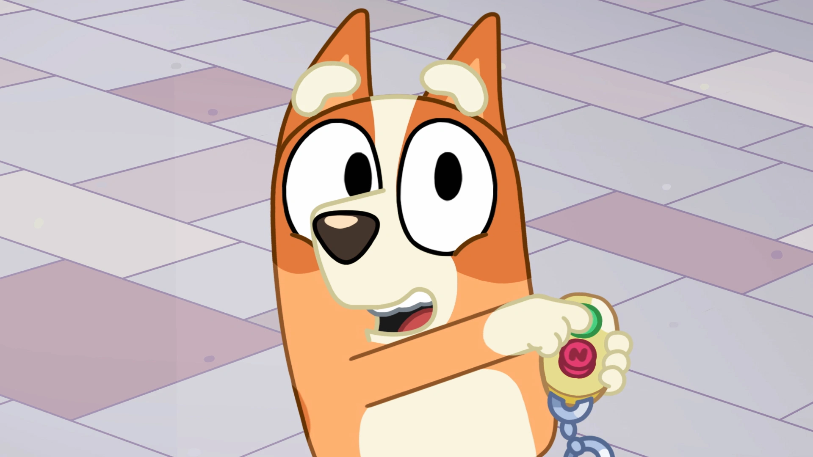
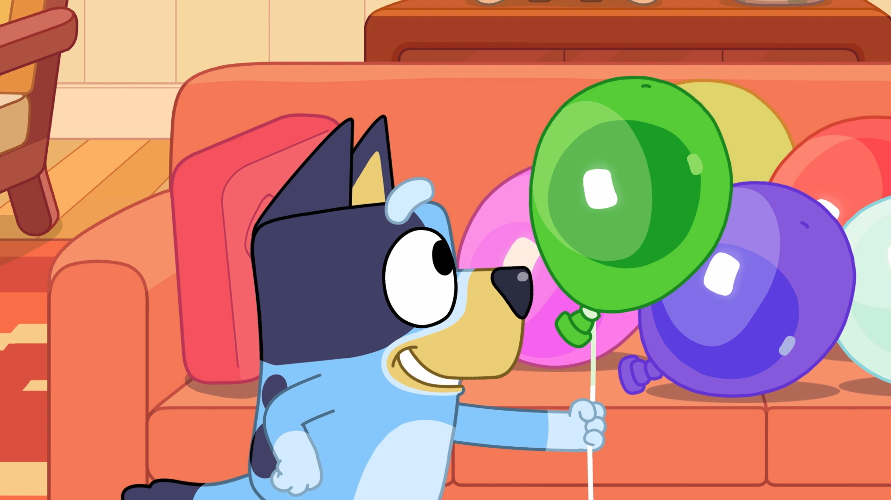
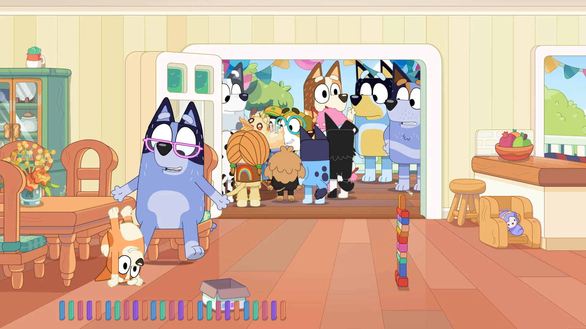
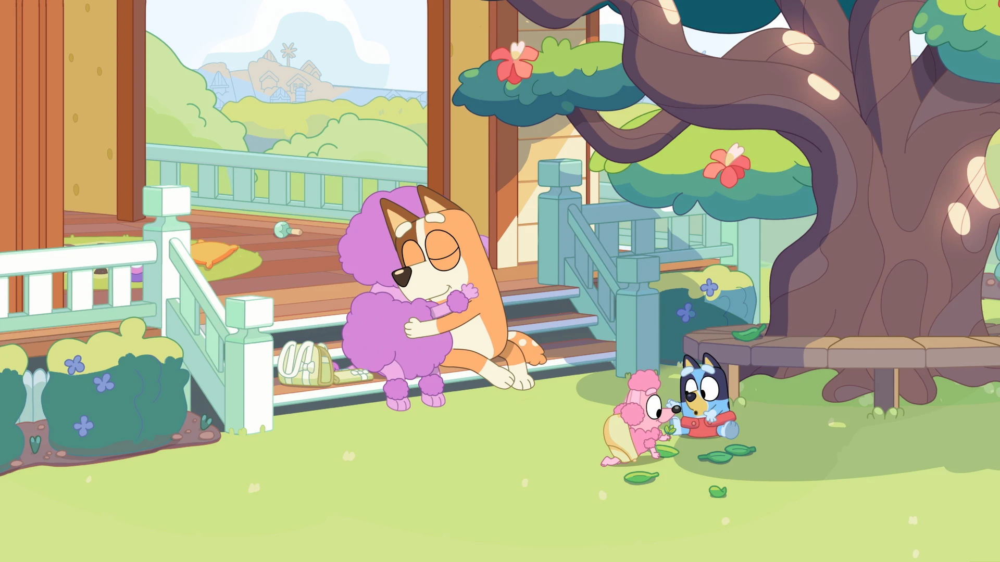
Temporada 3
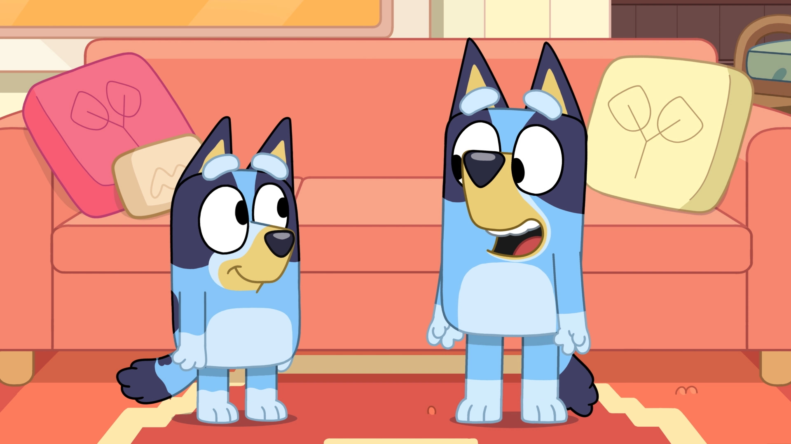
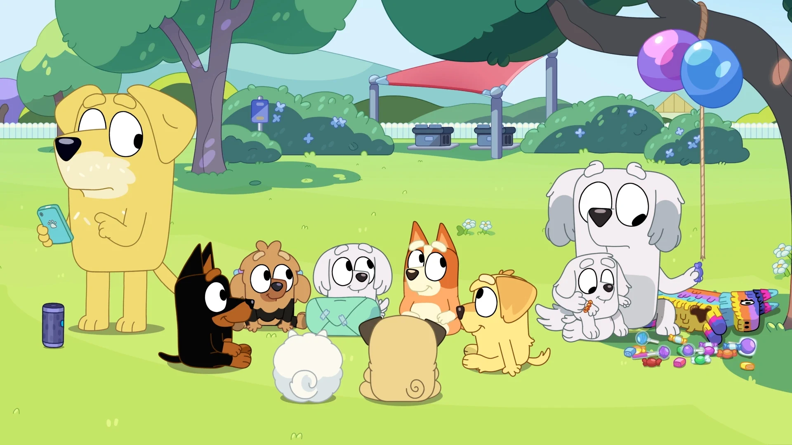
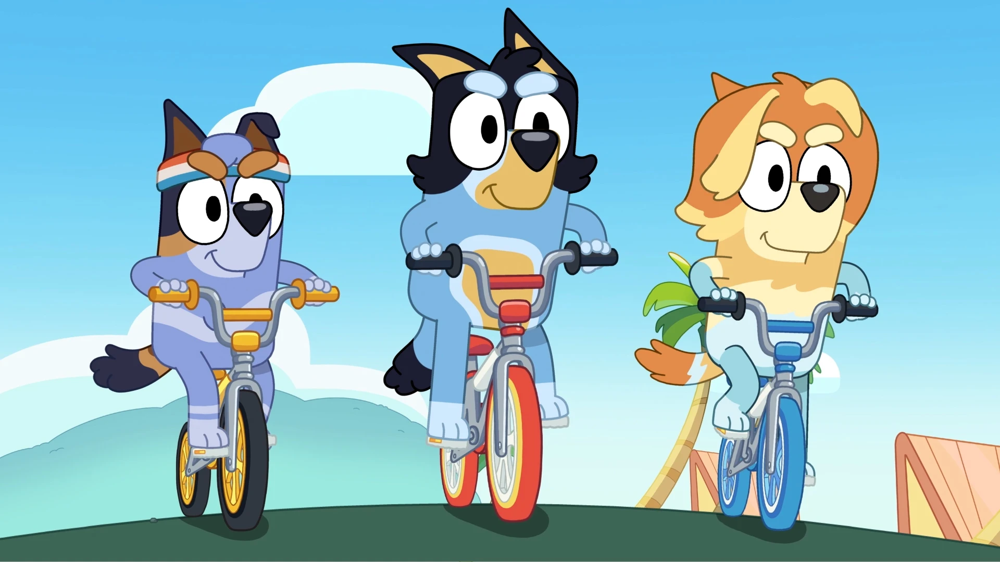
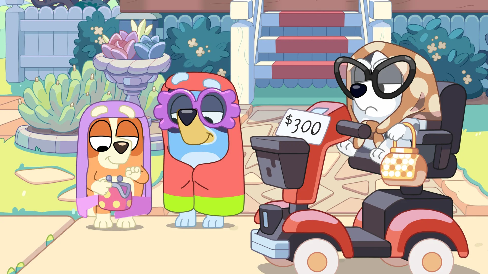
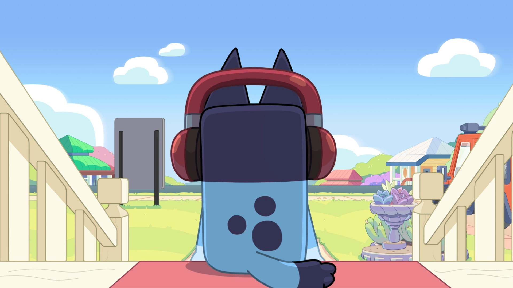